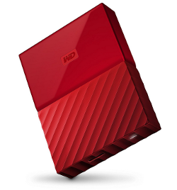
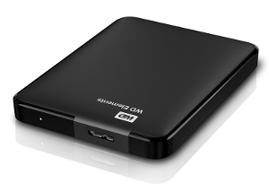

This
document is a guide that shows how to get started with your own
external 1TB USB drive containing a Full Wasta-Offline Mirror (over
600GB!), that can be used to install or update almost all
debian-based Linux software without accessing the Internet.
This
document is a guide that shows how to get started with your own
external 1TB USB drive containing a Full Wasta-Offline Mirror (over
600GB!), that can be used to install or update almost all
debian-based Linux software without accessing the Internet.
This document is designed to be a guide for an Advisor, Consultant, or Technician, who wants to have easy and fast access to virtually all Linux software and updates – maintained on a portable 1TB USB hard drive, that can be plugged into any Wasta Linux computer and be used to install or update its software without accessing the Internet.
It makes sense:
When you want to get started with your own 1TB drive containing the Fulll Wasta-Offline Mirror of Linux software
When you can gain at least occasional access to a server (like Ukarumpa) or low-cost Internet (like many typical locations in the USA) to download updates and keep your Full Wasta-Offline Mirror up to date
“How to get software updates for a Full Wasta-Offline Mirror residing on a 1TB USB hard drive”
“How to update your Wasta-Linux software offline by memory stick or external hard drive”
If you are involved in the work of supporting Bible translation, and promoting Wasta Linux as the computing system tool of choice, Bill Martin would be happy to jump start your Full Wasta-Offline Mirror by copying all 600GB of mirror software to a 1TB (or larger) USB drive that you supply to him (including any shipping costs to get the drive back into your hands). If you are interested email Bill at bill_martin@sil.org.
Copying/Syncing 600GB to an external USB drive from Bill’s master mirror generally takes 3-4 hours to complete. If you tried to download that much data to get started on an empty drive it would probably take days to complete even with fast Internet. Once you have the initial mirror data, maintaining new updates once per week or so might involve downloading a few hundred megabytes to a few gigabytes per week, depending on how many updates are released into the Internet repositories.
The 1TB drive will contain the following:
A clone of a git repository containing a number of wasta-offline scripts that Bill uses to setup and rsync multiple drives containing the full wasta-offline mirrors
The
Full Wasta-Offline Mirrors
of the these Internet repositories*:
archive.canonical.com (partner)
archive.ubuntu.com (main
multiverse restricted universe)
extras.ubuntu.com (main)
security.ubuntu.com (main
multiverse restricted universe)
extra.linuxmint.com (main)
packages.linuxmint.com (backport
import main upstream)
packages.sil.org (main)
ppa.launchpad.net/libreoffice/libreoffice-4-2 (main)
ppa.launchpad.net/libreoffice/libreoffice-4-4 (main)
ppa.launchpad.net/libreoffice/libreoffice-5-0 (main)
ppa.launchpad.net/libreoffice/libreoffice-5-1 (main)
ppa.launchpad.net/libreoffice/libreoffice-5-2 (main)
ppa.launchpad.net/libreoffice/libreoffice-5-3 (main)
ppa.launchpad.net/wasta-linux/wasta (main)
ppa.launchpad.net/wasta-linux/wasta-apps (main)
*Note:
The Ubuntu mirrors include all LTS packages for Precise, Trusty and Xenial.
The Linux Mint mirrors include the packages for Maya, Qiana, Rebecca, Rafaela, Rosa, Sarah, Serena and Sonya.
The SIL repositories include packages for Precise, Precise-Experimental, Trusty, Trusty-Experimental, Xenial, and Xenial-Experimental.
Both 32-bit and 64-bit packages are included for all repositories.
All together this represents approximately 600GB of data on this USB hard drive.
This depends on your anticipated use of the mirror. If you won’t be using the USB drive in hot, dusty, humid, rough travel environments, then almost any 1TB portable USB hard drive will work. For standard durability, I recommend Western Digital brand 1TB portable USB hard drives. The drive can be USB 2.0 or 3.0, but USB 3.0 is the current recommendation. Here are a couple examples from Amazon that currently cost about $60 – sometimes these or similar models can be found online for closer to $45:
|

|

|
|
Western Digital My Passport (red) $59 |
Western Digital Elements $63 |
|
https://www.amazon.com/Black-Passport-Portable-External-Drive/dp/B01LQQHI3S?th=1 |
https://www.amazon.com/Elements-Portable-Drive-Storage-WDBUZG0010BBK-EESN/dp/B00CI3BLPA |
For portability the drive should be a 2.5” USB powered hard drive. It should be at least 1TB in size since the current data for all the software mirrors that are included occupy at least 600GB of drive space. A larger USB drive can be used. The drive will be formatted with an EXT 4 Linux file system, so it will not be suitable for connecting to a Windows computer (Windows won’t recognize the Linux file system and will ask to format it!).
If you routinely travel to or through areas that are hot, dusty, humid, or subject to rough handling, you would be wise to get the more rugged Silicon Power “Armor” series USB drives. These are military-grade, shockproof, and water resistant. There are several 1TB models to choose from via Amazon:
|
|
|
|
|
Silicon Power model A30 $61 |
Silicon Power model A60 $60 |
Silicon Power model A65 $82 |
|
https://www.amazon.com/Silicon-Power-Military-Shockproof-2-5-Inch/dp/B00ESUIX4S |
https://www.amazon.com/Silicon-Power-Military-grade-Shockproof-Water-Resistant/dp/B00LN0P5Q0 |
https://www.amazon.com/Silicon-Power-Shockproof-Waterproof-SP010TBPHDA65S3K/dp/B00WB9M524 |
in August-September 2016, Bill took a Silicon Power model A60 (like the middle sample pictured above) with him to Manus Island in PNG – a hot, humid, salt spray laden environment. The drive had the Full Wasta-Offline Mirror (600GB) that was updated just before he left for PNG. Manus Island has a very expensive and slow Internet accessible only via a cellular network data plan. While there he used the full Wasta-Offline Mirror to fully update and/or upgrade over 30 Wasta computers (Wasta 14.04 and 16.04) without having to access the Internet for any of those updates/upgrades!
See the document titled:
“How to get software updates for a Full Wasta-Offline Mirror residing on a 1TB USB hard drive”
“How to get software updates from one Wasta computer and transfer them to another Wasta computer using wasta-offline-setup”
How
to get started with your own Full Wasta-Offline Mirror